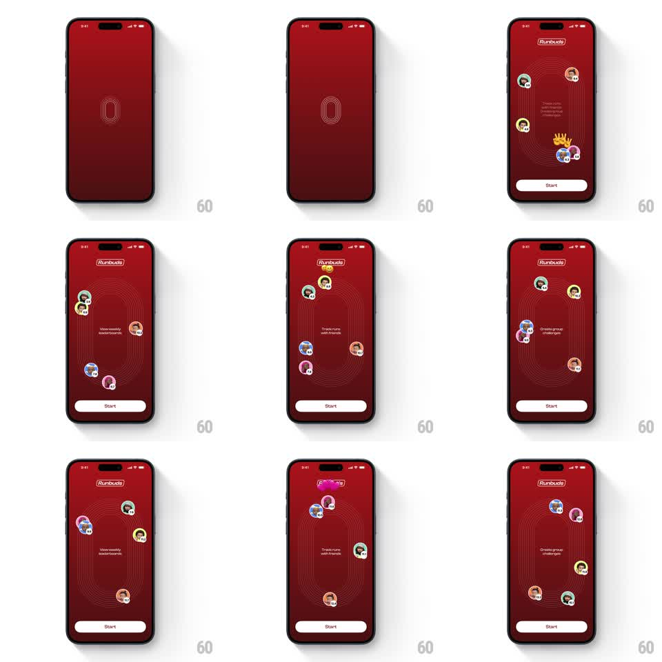

Media
Frame-by-frame

Rebuild this animation 1:1: Runbuds' splash-to-onboarding - the red splash with the outlined track-oval logo expands into the onboarding screen where runner avatars orbit an elliptical track while feature lines ("View weekly leaderboards", "Track runs with friends", "Create group challenges") cycle in the center.

Rebuild this animation 1:1: Runbuds' splash-to-onboarding - the red splash with the outlined track-oval logo expands into the onboarding screen where runner avatars orbit an elliptical track while feature lines ("View weekly leaderboards", "Track runs with friends", "Create group challenges") cycle in the center.
## Integration
Integration: stack-agnostic spec - springs given as stiffness/damping, timed motions as duration + curve; map every value to your framework and animation library of choice.
## Scene
Deep red screen. Splash: centered thin-line oval track outline. Onboarding: "Runbuds" logo top, a large elliptical running-track diagram (concentric lane lines) with ~6 circular runner avatars (with flag badges) riding the lanes, a crowned avatar marking the leader, cycling feature text in the middle, and a white "Start" button.
## Motion spec
Pattern: logo morph + orbiting avatars + cycling text, continuous.
- Splash morph: the track outline scales up and fades (600ms, ease-out) as the full scene fades in, lanes drawing outward from center (500ms).
- Orbit: avatars travel the elliptical lanes at staggered speeds (8-14s per lap), scaling slightly smaller at the far side of the ellipse for depth; the crowned leader does a subtle bob.
- Text cycle: the center feature line cross-fades every ~2.5s (slide-up 10px + fade, 300ms each way).
- Lanes: the lane lines shimmer faintly (opacity 0.3 -> 0.5, 3s alternate).
## Calibration
- Avatars follow the ellipse path exactly - they ride the lanes, not a circle.
- The text cycle never overlaps itself: full fade-out before fade-in.
## Reduced motion
Static scene with the first feature line; no orbit or cycling.
## Don't miss
- The crowned avatar leads the pack - it is the only one with the crown badge.
- The red is deep and flat; all contrast comes from white lines and avatar colors.